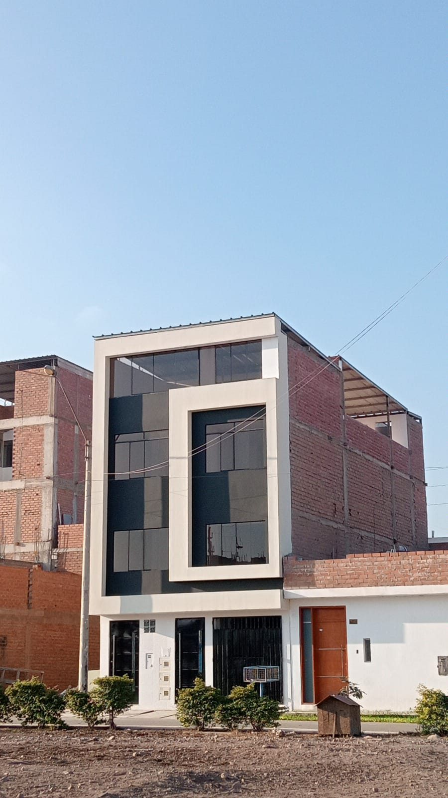

01
Primer piso
- 2 dormitorios
- Sala comedor
- Cocina
- 1 baño
- Lavandería y tendal
- Cochera

Condominio Villa Verde · Las Palmas · Pachacámac
90 m² construidos en cuatro niveles. Cada piso tiene su cocina, su baño y su medidor de gas natural: se puede vivir en uno y alquilar los otros.
US$ 130,000 Documentos en regla
Piso por piso
No es una casa grande partida en ambientes: son cuatro pisos completos, cada uno con cocina, baño y lavandería propios. El gas natural entra con medidor independiente en cada nivel, así que cada piso paga lo suyo.
01
02
03
04
Lo que la hace distinta
La mayoría de casas de este tamaño obligan a elegir: o la habita una familia entera, o hay que meterle obra para dividirla. Esta ya viene dividida de fábrica.
Dónde queda
Condominio Villa Verde — Las Palmas, Pachacámac, Lima
Ubicación referencial · el punto exacto se coordina por WhatsApp
Escriba por WhatsApp y coordinamos la visita. Se recorren los cuatro pisos y se revisan los papeles en el sitio.
Escribir por WhatsAppRonivel Jiménez · Asesor inmobiliario